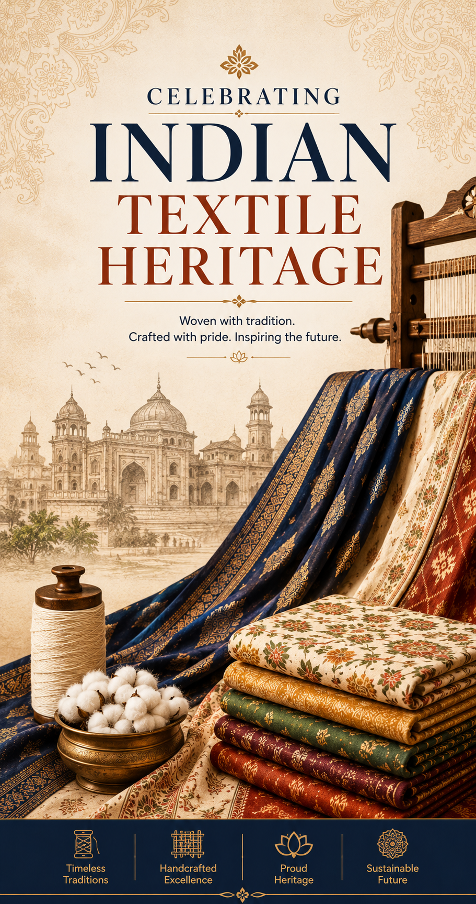

Vastrika was founded to celebrate the artistry of India's weaving communities and connect customers directly with authentic handwoven sarees. Our collections bring together the finest traditions of Kanchipuram, Banaras, Chanderi and Pochampally.

Vastrika started as a small boutique in Chennai with a mission to preserve and promote India's rich textile heritage.
Our founders travelled across weaving villages, meeting artisans and learning the stories behind their craft.
What began as a passion project soon became a trusted destination for saree lovers seeking authenticity, quality and tradition.
Each saree we curate reflects generations of knowledge passed down within artisan families.
From intricate zari work to handwoven silk, our collections honour India's diverse weaving traditions while embracing modern style.
Every purchase helps sustain artisan communities and keeps traditional weaving alive for future generations.
To connect customers with genuine handcrafted sarees while ensuring fair opportunities and recognition for artisans.
We aim to make handwoven fashion accessible, meaningful and sustainable.
To become India's most trusted destination for premium handwoven sarees and artisan-driven fashion.
We envision a future where every artisan's skill is valued and celebrated worldwide.
Every saree is sourced from trusted artisan communities and selected for originality, quality and craftsmanship.
We check fabric, border work, finishing, texture and drape before adding any saree to our boutique collection.
Your purchase helps support weaving families and keeps traditional handloom skills alive for future generations.
A third-generation Kanchipuram silk weaver known for temple borders and rich silk craftsmanship.
A Banarasi brocade specialist who creates elegant zari sarees for bridal and festive collections.
A Chanderi artisan creating lightweight cotton-silk sarees with graceful traditional motifs.
We partner directly with skilled weaving families.
Each saree is checked for fabric, color and finish.
Our team curates pieces for modern occasions.
Packed with care and delivered with premium service.